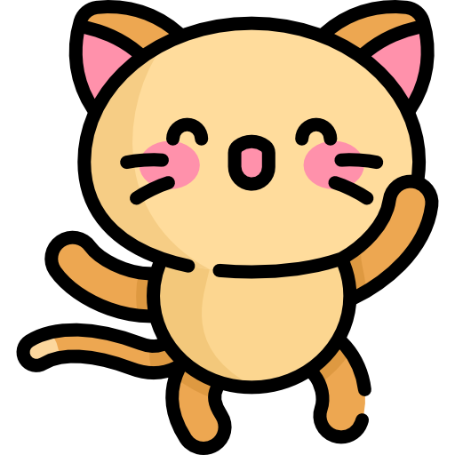
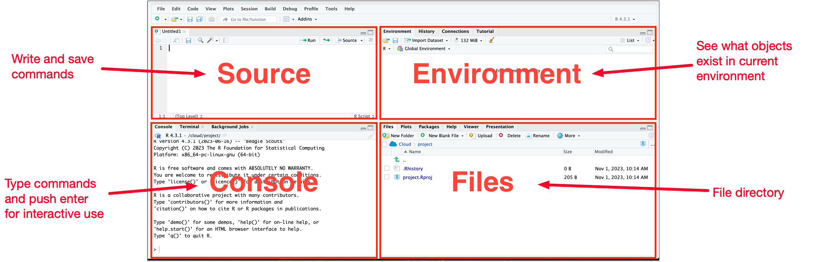
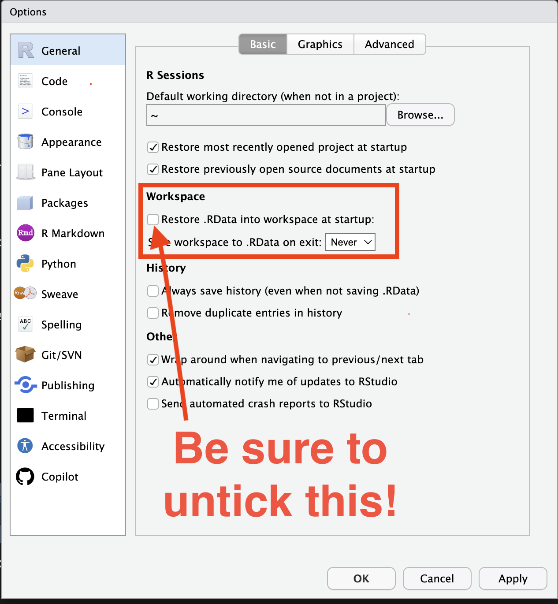
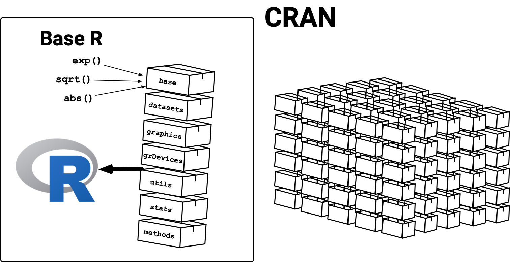

library(openai)
out <- create_image("A data scientist with a laptop and
statistical software in an anime style")Getting Started
ANU BDSI
workshop Introduction to R programming
Welcome 👋
Teaching team



Your turn! Tell us about you
Workshop materials
All materials will be hosted at
https://anu-bdsi.github.io/workshop-intro-R/
Learning objectives
Warning in readLines("_learning-objectives.qmd"): incomplete final line found
on '_learning-objectives.qmd'- Conduct elementary arithmetic operations using R
- Navigate the RStudio interactive development environment (IDE)
- Install external packages in R to extend functionality
- Comprehend various object types in R
- Manipulate lists, matrices, and vectors in R
- Compute basic summary statistics including mean, median, quartiles, and standard deviation using R
- Grasp the concept of missing values within the R environment
- Import and export data in R
- Create basic functions, employ conditional statements, and utilize for loops in R
- Decipher error messages and do basic troubleshooting
Current learning objectives
Warning in readLines("_learning-objectives.qmd"): incomplete final line found
on '_learning-objectives.qmd'- Conduct elementary arithmetic operations using R
- Navigate the RStudio interactive development environment (IDE)
- Install external packages in R to extend functionality
- -Comprehend various object types in R
- -Manipulate lists, matrices, and vectors in R
- -Compute basic summary statistics including mean, median, quartiles, and standard deviation using R
- -Grasp the concept of missing values within the R environment
- -Import and export data in R
- -Create basic functions, employ conditional statements, and utilize for loops in R
- -Decipher error messages and do basic troubleshooting
What is R?
- R is a programming language predominately for data analysis.
- RStudio Desktop is an integrated development environment (IDE) that helps you to use R.

- Visual Studio Code is another popular IDE (we don’t use this).
Why learn R?
- R is one of the top programming languages for statistics or data science.
- Python is also a good alternative language for data science.
- Better to have a mastery of at least one language rather than none.
- R was initially developed by statisticians for statisticians.
- State-of-the-art statistical methods are more readily available in R.
- R has a very active and friendly community.
- R is a free and open source software (FOSS) and is a cross-platform language:
- free = money is not a barrier to use it,
- open source software = transparency,
- cross-platform = can be used on Windows, Mac, and Linux.
Rapid development
- Access to Open AI (known for ChatGPT) API is already available in R!
Rich graphical outputs
- R also has a wide range of packages for creating beautiful and interactive graphics.
Try clicking on a bar on the left plot.
Rows: 77 Columns: 5
── Column specification ────────────────────────────────────────────────────────
Delimiter: ","
chr (4): affiliation, workshop, comment, role
dbl (1): confidence
ℹ Use `spec()` to retrieve the full column specification for this data.
ℹ Specify the column types or set `show_col_types = FALSE` to quiet this message.Dynamic documents
- Create beautiful documents with better reproducible practices and workflow!
- This slide and the website is made using a combination of R and Quarto.
Interactively working with R
- You can use R like a calculator:
How do you use R?
- RStudio Desktop (or RStudio IDE) is the most common way to use R.

Live demo
Customise Global Options
- Go to RStudio > Tools > Global Options…
- Under the General tab, make sure the “Restore .RData into workspace at startup” is unticked.
- This avoids unexpectedly loading (old) data into your workspace and making your code only work in your workspace, but not for others (which is bad reproducible practice).

Arithmetics
Vectors
Functions
- There are many functions in R.
- You can look at the documentation on how to use it:
Finding functions
- To find indexed functions for a package:
- Google it with a good set of keywords.
- The recent trend is ask generative AI.
Base R

- R has 7 packages, collectively referred to as the “base R”, that are loaded automatically when you launch it.
- The functions in the base packages are generally well-tested and trustworthy.
Contributed R Packages
- R packages are community developed extensions to R (much like apps on your mobile)
- The Comprehensive R Archive Network (CRAN) is a volunteer maintained repository that hosts submitted R packages that are approved (much like an app store)
- There are close to 20,000 packages available on CRAN but the qualities of R packages vary.
- There are other repositories that host R packages, e.g. Bioconductor for bioinformatics, R Universe, R-Forge, GitHub (we won’t cover these).
Photo by Sara Kurfeß on Unsplash
Using packages on CRAN
- If the package (say
praise) is on CRAN, you can install it by:
install.packages("praise")- You only need to
install.packages()once!
- Loading exported functions from a package:
- Use
package::function()for without loading package:
Summary
RStudio Desktop (or RStudio IDE)
Console or Source
- Use
install.packages()to install a package (only once). - Use
library()to load a package. - Use
package::function()to use a function from a package without loading it.
Exercise time
10:00